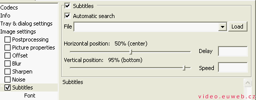

Po nainstalování obou programů (což by nemělo dělat problémy), si z menu Start/ Programy/ ffdshow zvolte možnost Configuration. Z konfiguračního menu musíte v části Codecs zaškrtnout XVID, DIVX 3, DIVX 4, DIVX 5:
V menu "Tray & dialog settings" zaškrtněne "Show tray icon".
Titulky: Odškrtnout menu Subtitles (ať to vypadá takhle):
POZOR: Pokud používáte k přehrání titulků DivX G400, musíte ho vypnout, protože s ním to nejde. Bohužel. Za to to funguje s VobSubem.
Spusťte si TMPGEnc a vypněte kouzelníka (Wizarda). V menu Volby/ Nastavení programu si dejte záložku VFAPI plug-in. V seznamu je položka Číst multimediální soubory DirectShow. Klikněte na to pravým tlačítkem a zvyšte prioritu až se plug-in dostane navrch seznamu.
Spusťte si kouzelníka (Soubor/ Průvodce projektem) a postupujte podle instrukcí. Na první obrazovce si vyberete, co chcete dělat za soubor: VideoCD, Super Video CD nebo DVD. U nás (v ČR) se používá norma PAL, takže moc na výběr nemáte: Vide-CD v PALu, Super Video-CD v PALu a DVD v PALu v nízkém a vysokém rozlišení. Vyberte a klikněte na "Další >".
V druhém kroku vybíráme zdrojový soubor videa i zvuku. K tomu není co říct, kliknete na "Hledat...", najdete video a potvrdíte. Zbytek nechte jak je a jedeme dál.
A výbíráme filtry. Jsou tři + "Ostatní nastavení".
Nastavení i názvy filtrů jsou doufám jasné, v tom problém není. Chtěl bych upozornit, že filtr odstaňující šum hodně prodlužuje dobu zpracování (28 hodin s filtrem, čtyři bez něj).
Ostatní nastavení - Je to v podstatě nastavení pro pokročilé. Na záložce "Video" můžete změnit "Kvalitu hledání pohybu", ale podepíše se to na čase zpracování. Na záložce "pokročilé" můžete aplikovat další filtry. Pokud na jednom necháte myš, ukáže se vám, co to dělá. Nic víc tam neměním, nechávám to, jak to je. Tak dobře tomu nerozumím.Na další obrazovce vybíráte datový tok. Nejde to u VCD PAl a DVD PAL v nízkém rozlišení. Výhodou je, že můžete nastavovat datový tok (podle něj se počítá velikost souboru), odhadovanou velikost souboru (počítá se podle toho datový tok) a zaplnění disku (podle toho se počítá taky datový tok).
V pátém kroku vybíráte výstupní soubor. Můžete si vybrat, jestli chcete audia a video zvlášť (funguje jen u DVD). Potom musíte odškrtnout "Kódovat hned" (aby tam nebyla fajfka), což vás po kliknutí na "Další >" pošle do hlavního okna programu. Zvolte Soubor/ Náhled... Objeví se vám okno, ve kterém vidíte výsledek. Zkontrolujte, zda se vám zobrazují titulky. Pokud ne, klikněte na ikonku ffdshow (pokud jste postupovali podle místního návodu, je u hodin).
Přepněte se do menu Subtitles, klikněte na "Load" a titulky si najděte. Bohužel se změny neprojeví hnet, musíte náhled vypnout a zase zapnout. Veškerá nastavení titulků se provádějí ve ffdshow.
Já to mám nastavené:
V podmenu "Font":
Je to moje oblíbené nastavení, nevnucuju to.
Pokud se vám to líbí, kliknete na "Start" a začala konverze. Výsledek?:
Ten titulek do toho filmu nesedí, je to tím, že se jedná o pracovní verzi, takže filmové titulky, které by ve filmu zabraly hDoodinu, zaberou 4 minuty.
Video na PC: Vytvořeno v roce 2005 a víc. Autorem je Jan 'Šlaha' Šlahora. Veškerá práva vyhrazena autorům článků. Pokud není uvedeno jinak, jsem to já.
{kind=link}